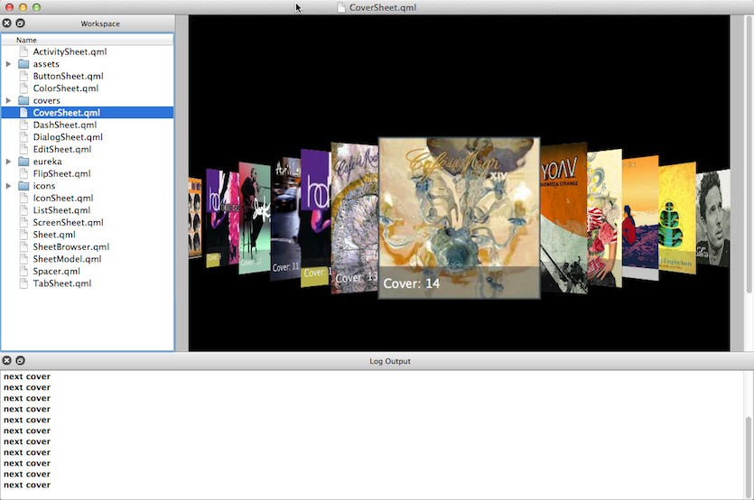

Qt QmlLive
\chapterOverview
Qt QmlLive is a local and remote Qt Quick live reloading system. It allows you to change your QML user interface source code and view the result in almost realtime.

Often in user interface development you need to edit the placement or animations of the user interface to provide the exact user experience envisioned by the design team. This process of try-and-error is tedious with a classical edit-save-run-exit cycle. With QmlLive this cycle is way more effective. The scene is automatically reloaded when a document change is detected.
A live reloading system opens a complete new world of possibilities and makes your work so much more delightful.
\chapterContents
The content of the documentation: